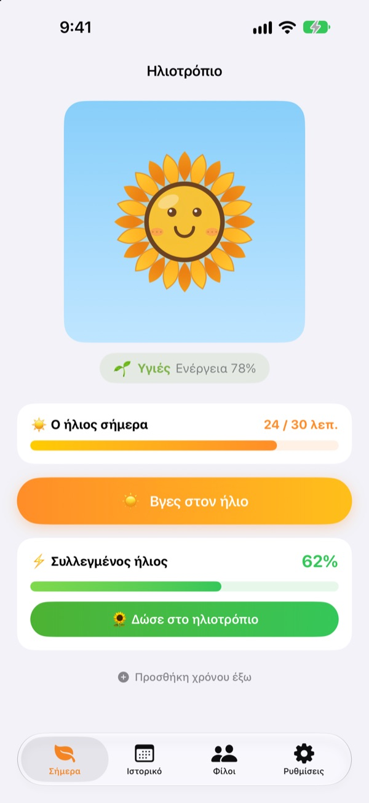
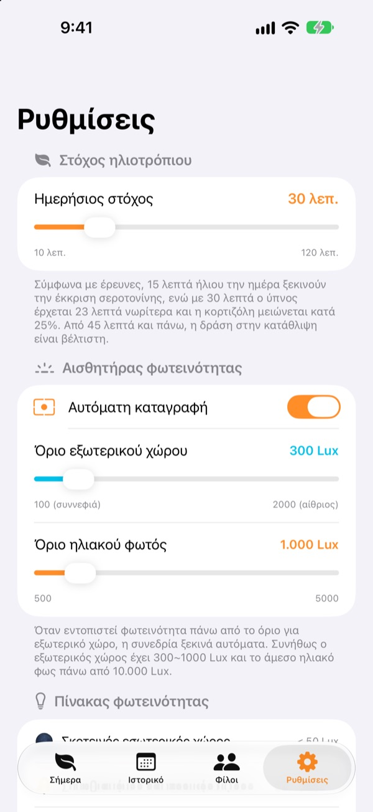
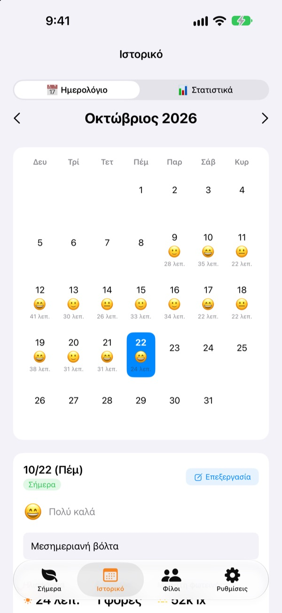
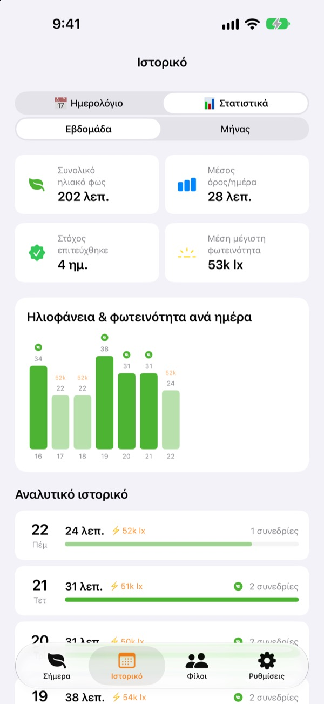

Ο σημερινός ήλιος
μεγαλώνει το ηλιοτρόπιό σου
Αρκεί να βγεις έξω και ο χρόνος στον ήλιο μαζεύεται μόνος του. Δώσε στο ηλιοτρόπιο τον ήλιο που μάζεψες και θα είναι ολόφρεσκο. Αν το ξεχάσεις λίγες μέρες, αρχίζει να μαραίνεται.
Όλες οι λειτουργίες είναι δωρεάν. Τα δεδομένα μένουν στη συσκευή σου.

Μάζεψε λίγο ήλιο
Διάλεξε πόσο φως έχει και για πόση ώρα, πάρε ήλιο και δώσ' τον σε ένα ηλιοτρόπιο που έχει αρχίσει να γέρνει.
Πόσα λεπτά ήλιο πήρες σήμερα;
Λίγα βήματα ως τη δουλειά, μια γρήγορη έξοδος για φαγητό. Όταν περνάς τη μέρα μέσα, καταλαβαίνεις μόνο το βράδυ ότι σχεδόν δεν είδες φως. Το Ηλιοτρόπιο δείχνει σε αριθμούς τον χρόνο σου έξω, και το ηλιοτρόπιό σου περιμένει τη βόλτα της επόμενης μέρας.
Βγες έξω και μετράει μόνο του
Πάτησε Βγες στον ήλιο και βγες έξω. Η εφαρμογή εκτιμά τη φωτεινότητα γύρω σου από τα δεδομένα έκθεσης της μπροστινής κάμερας. Όταν το φως μείνει σε επίπεδο εξωτερικού χώρου για περίπου 30 δευτερόλεπτα, ξεκινά η καταγραφή. Δεν τραβάει ούτε αποθηκεύει ποτέ φωτογραφίες.
Μετά ο αισθητήρας ανάβει μόνο για 20 δευτερόλεπτα κάθε 2 λεπτά, για να γλιτώνει μπαταρία.

Ήλιος και διάθεση, μέρα με τη μέρα
Στο ημερολόγιο κάθε μέρα έχει τον χρόνο της στον ήλιο, ένα emoji διάθεσης και μια σύντομη σημείωση. Ήσουν έξω χωρίς να μετρήσεις; Με την Προσθήκη χρόνου έξω προσθέτεις από 5 έως 120 λεπτά.

Η εβδομάδα και ο μήνας με μια ματιά
Τα εβδομαδιαία και μηνιαία στατιστικά δείχνουν τις μέρες που έπιασες τον στόχο και τον μέσο χρόνο σου στον ήλιο. Όρισε ημερήσιο στόχο από 10 έως 120 λεπτά και δες αμέσως στην αρχική οθόνη πόσο λείπει σήμερα.
Τα widget στην οθόνη Αφετηρίας και στην οθόνη κλειδώματος, καθώς και το Dynamic Island, δείχνουν τον σημερινό ήλιο και πώς είναι το ηλιοτρόπιο.

Ξεκίνα σε τρία βήματα
- 1
Όρισε ημερήσιο στόχο
Ξεκινά από 30 λεπτά. Στις ρυθμίσεις διαλέγεις από 10 έως 120.
- 2
Βγες στον ήλιο
Πάτησε
Βγες στον ήλιοκαι βγες έξω με την εφαρμογή ανοιχτή. Ζητά πρόσβαση στην κάμερα μόνο μία φορά. - 3
Τάισε το ηλιοτρόπιο
Πάτησε
Δώσε στο ηλιοτρόπιογια να γίνει ο ήλιος που μάζεψες ενέργεια.
Πώς το φως γίνεται ήλιος
- Κάτω από 300 lux
- Αδύναμο φως: δεν μετράει ως χρόνος στον ήλιο
- 300–1.000 lux
- Έξω/συννεφιά: 1–3% ανά 10 λεπτά
- 1.000–10.000 lux
- Ήλιος: 3–33% ανά 10 λεπτά
- Από 10.000 lux
- Έντονος ήλιος: πάνω από 33% ανά 10 λεπτά
- Συλλεγμένος ήλιος
- λεπτά × μέση φωτεινότητα ÷ 3.000 (έως 100% κάθε φορά)
- Ενέργεια ηλιοτρόπιου
- πέφτει 2,5% την ώρα, περίπου 60% τη μέρα
Το όριο εξωτερικού χώρου ρυθμίζεται από 100 έως 2.000 lux στις ρυθμίσεις. Η προεπιλογή είναι 300 lux.
Συχνές ερωτήσεις
Πώς μετράει τον ήλιο;
Εκτιμά τη φωτεινότητα γύρω σου (ένταση φωτισμού) από τα δεδομένα έκθεσης της μπροστινής κάμερας. Όταν το φως μείνει για λίγο σε επίπεδο εξωτερικού χώρου, η καταγραφή ξεκινά μόνη της. Δεν τραβάει ούτε αποθηκεύει φωτογραφίες.
Τρώει πολλή μπαταρία;
Μόλις επιβεβαιωθεί ο ήλιος, ο αισθητήρας δεν μένει αναμμένος. Ξυπνά για περίπου 20 δευτερόλεπτα κάθε 2 λεπτά για να ξαναμετρήσει, και τα υπόλοιπα τα κάνει ένα απλό χρονόμετρο.
Το ηλιοτρόπιό μου μαραίνεται συνέχεια.
Το ηλιοτρόπιο χάνει 2,5% ενέργειας κάθε ώρα. Μάζεψε ήλιο και πάτησε Δώσε στο ηλιοτρόπιο. Μια καθαρή μέρα, 15 με 20 λεπτά σε άμεσο ήλιο αρκούν για να καλύψουν ολόκληρη τη μέρα.
Ήμουν έξω αλλά δεν καταγράφηκε τίποτα.
Χρησιμοποίησε την Προσθήκη χρόνου έξω στο κάτω μέρος της αρχικής οθόνης για να προσθέσεις 5 έως 120 λεπτά. Αν τις συννεφιασμένες μέρες η καταγραφή δυσκολεύεται να ξεκινήσει, χαμήλωσε το όριο εξωτερικού χώρου στις ρυθμίσεις.
Πώς λειτουργούν οι φίλοι;
Όταν εσύ και ένας φίλος είστε κοντά (σε περίπου 10 μέτρα) και μετράτε και οι δύο ήλιο, συνδέεστε αυτόματα. Με κάποιον καινούργιο πρέπει πρώτα να επιβεβαιώσετε ότι παίρνετε ήλιο μαζί· μετά γίνεται αυτόματα. Τα πέταλα γίνονται πολύχρωμα και σε 3 μέρες ξαναπαίρνουν το χρώμα τους, ενώ ο κοινός σας χρόνος μένει στην καρτέλα Φίλοι. Χρειάζεστε και οι δύο την εφαρμογή και πρόσβαση σε Bluetooth και τοπικό δίκτυο.
Είναι όντως δωρεάν;
Ναι. Χωρίς διαφημίσεις και αγορές, με όλες τις λειτουργίες. Αν σου αρέσει, μπορείς να αφήσεις φιλοδώρημα, αλλά δεν ξεκλειδώνει τίποτα επιπλέον.
Μπορώ να κρατήσω αντίγραφο ή να μεταφέρω τα δεδομένα μου;
Όλα μένουν στη συσκευή χωρίς διακομιστή, και κρατιούνται οι τελευταίες 90 μέρες. Δεν υπάρχει ξεχωριστή εξαγωγή, αλλά τα δεδομένα σου περιλαμβάνονται στο κανονικό αντίγραφο ασφαλείας του iPhone στο iCloud ή στον υπολογιστή.
Πώς σβήνω όλα τα δεδομένα;
Στις ρυθμίσεις της εφαρμογής πάτησε Επαναφορά δεδομένων ή διάγραψε την εφαρμογή. Δεν αναιρείται.
Πού αναφέρω ένα πρόβλημα;
Γράψε στη διεύθυνση παρακάτω ή άνοιξε ένα issue στο GitHub (github.com/M1zz/SunlightTracker/issues). Το μοντέλο της συσκευής, η έκδοση iOS και τι ακριβώς έγινε βοηθούν πολύ. Συνήθως απαντάμε μέσα σε λίγες μέρες.
Ερωτήσεις ή σχόλια; Γράψε στο leeo@kakao.com.